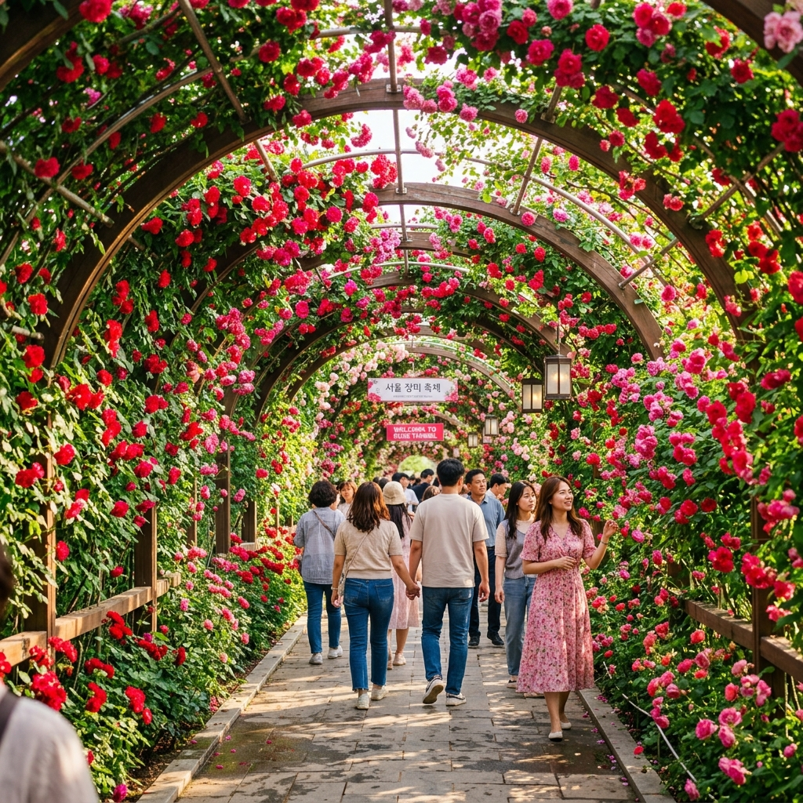
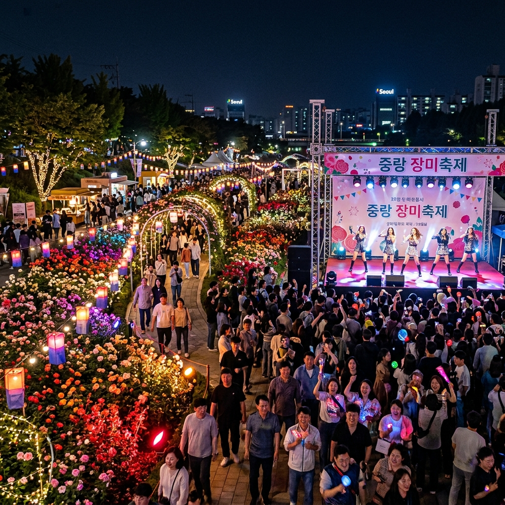
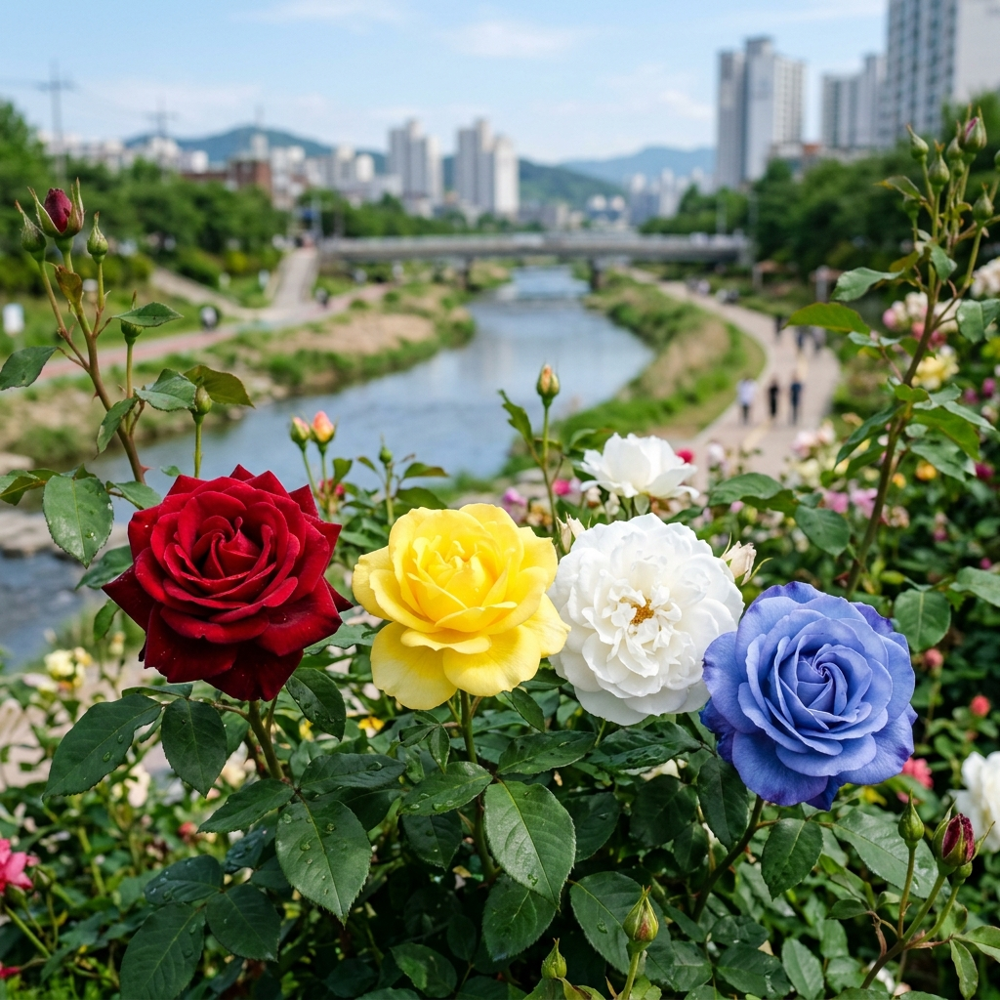

서울 장미축제 2026 중랑천 개화 상황 및 주차 정보 안내: 가장 아름다운 순간
천만 송이 장미가 빚어내는 보랏빛, 붉은빛 물결! 2026년 5월, 서울 중랑천 일대가 다시 한번 화려한 꽃대궐로 변신합니다. 대한민국에서 가장 긴 장미 터널을 보유한 '서울 장미축제'는 매년 수백만 명의 시민들에게 '화양연화(花樣年華)', 즉 인생에서 가장 아름다운 순간을 선사해 왔습니다. 2026년 축제의 상세 일정과 개화 상황, 그리고 쾌적한 관람을 위한 팁을 지금 확인해 보세요.
01 | 2026 서울 장미축제 개최 일정 및 장소

끝없이 이어지는 5.15km의 환상적인 장미 터널 전경 / AI 제작 이미지
제18회를 맞이하는 2026 서울 장미축제는 5월 15일(금)부터 5월 23일(토)까지 총 9일간 중랑장미공원 일대(묵동교~겸재교)에서 개최됩니다. 5월의 햇살 아래 만개한 장미들이 중랑천 변을 수놓으며 방문객들을 맞이할 준비를 마쳤습니다.
특히 올해는 축제 전 기간 동안 '랑랑 18세'라는 테마로 청춘의 열기와 장미의 우아함을 결합한 다채로운 프로그램이 운영됩니다. 메인 행사인 '그랑로즈페스티벌'은 축제 초반인 5월 15일부터 17일까지 집중적으로 펼쳐지니 방문 계획에 참고하시기 바랍니다. 서울 도심에서 만날 수 있는 가장 화려한 봄의 엔딩을 경험할 기회입니다.
02 | 실시간 장미 개화 상황 및 관람 포인트
현재 중랑천의 장미들은 축제를 앞두고 정성스러운 유지관리 작업이 진행 중입니다. 장미 개화는 보통 5월 초부터 시작되어 축제가 열리는 5월 중순에 절정을 이룰 것으로 예상됩니다. 기상 상황에 따라 약간의 차이는 있을 수 있지만, 5.15km에 달하는 장미 터널 곳곳에서 수만 송이의 장미가 만개한 모습을 볼 수 있습니다.
관람의 핵심은 단연 '장미 터널'입니다. 덩굴장미가 머리 위를 가득 채운 터널을 걷다 보면 장미 향기에 취해 일상의 시름을 잊게 됩니다. 또한, 중랑장미공원 내에 조성된 다양한 품종의 장미 정원들은 각기 다른 색상과 향기로 방문객들의 오감을 자극합니다. 사진 촬영을 즐기신다면 아침 햇살이 비치는 시간대나 노을이 지는 황금 시간대를 추천합니다.
03 | 일자별 주요 프로그램 안내 (5/15~5/17)

야간 조명과 함께 어우러진 낭만적인 장미축제 콘서트 / AI 제작 이미지
축제의 하이라이트 기간인 첫 주말의 프로그램은 특히 풍성합니다. 5월 15일(금) '해피 로즈 데이'에는 장미 퍼레이드와 화려한 개막 콘서트가 진행됩니다. 5월 16일(토) '로맨틱 로즈 데이'에는 연인들을 위한 로맨틱 로즈 콘서트와 장미 합창 대회가 열립니다.
5월 17일(일) '러브 로즈 데이'는 중랑구민들과 함께하는 장미 가요제로 축제의 열기를 더합니다. 축제 마지막 날인 5월 23일(토)에는 지역 아티스트들이 총출동하는 페스티벌로 대미를 장식할 예정입니다. 상시 운영되는 장미 시장과 먹거리 존도 축제의 빼놓을 수 없는 즐거움입니다.
04 | 밤에도 아름다운 '장미의 밤' 야간 조명
서울 장미축제의 진면목은 밤에 드러납니다. 해가 지면 장미 터널과 정원 곳곳에 화려한 경관 조명이 불을 밝히며 낮과는 전혀 다른 몽환적인 분위기를 자아냅니다. 빛과 장미가 어우러진 야간 산책은 데이트 코스로 큰 인기를 끌고 있습니다.
특히 올해는 미디어 파사드와 LED 조형물을 활용한 포토존을 더욱 보강하여 '인생 사진'을 남기기에 최적의 환경을 조성했습니다. 밤 10시까지 운영되는 야간 조명 관람은 퇴근 후 가벼운 나들이를 원하는 직장인들에게도 좋은 휴식처가 될 것입니다. 장미 향 가득한 밤의 공기를 마시며 힐링의 시간을 가져보세요.
05 | 쾌적한 관람을 위한 주차 및 교통 팁

중랑천을 배경으로 핀 수려한 품종의 장미들 / AI 제작 이미지
축제 기간에는 엄청난 인파가 몰리기 때문에 자가용 이용은 절대 비추천입니다. 인근 공영 주차장(중화 제1~3 주차장)이 있지만 조기에 만차될 확률이 100%에 가깝습니다. 가장 현명한 방법은 지하철을 이용하는 것입니다.
7호선 먹골역(7번 출구)이나 중화역(3, 4번 출구)에서 내리면 축제장까지 도보로 5~10분 내외면 도착할 수 있습니다. 또한 6호선과 7호선이 만나는 태릉입구역(8번 출구)에서도 쉽게 접근이 가능합니다. 대중교통을 이용하시면 주차 스트레스 없이 축제의 흥겨움에만 집중하실 수 있습니다.
06 | 장미 먹거리 존과 로즈 버스킹
꽃 구경만큼 즐거운 것이 먹거리 탐방입니다. 중랑천 변을 따라 조성된 먹거리 존에서는 장미 아이스크림, 장미 차 등 축제 한정 메뉴를 비롯해 다양한 길거리 음식들을 만날 수 있습니다. 위생과 바가지 요금 근절을 위해 지자체에서 엄격히 관리하고 있습니다.
먹거리와 함께 즐기는 '로즈 버스킹' 공연도 축제의 활기를 더합니다. 신진 예술가들의 감미로운 음악 소리가 흐르는 거리에서 맛있는 음식을 즐기는 것은 축제의 진정한 묘미입니다. 지정된 장소에서만 취식이 가능하므로 주변 환경을 깨끗이 사용하는 성숙한 매너를 보여주세요.
07 | 어린이와 함께하는 '장미 놀이터'
아이들과 함께 방문하는 부모님들을 위한 공간도 마련되어 있습니다. 장미 공원 내 '장미 놀이터'에서는 어린이들을 위한 소규모 공연과 전통 놀이 체험, 페이스 페인팅 등 다양한 프로그램이 상시 운영됩니다.
아이들이 마음껏 뛰어놀 수 있는 안전한 잔디밭과 그늘막이 준비되어 있어 가족 단위 소풍을 즐기기에도 적합합니다. 다만, 꽃가루 알레르기가 있는 아이들은 방문 전 마스크를 준비하거나 미리 약을 챙기는 등 주의가 필요할 수 있습니다. 장미의 아름다움을 아이들에게 선물해 주세요.
08 | 방문 전 필수 체크리스트 및 준비물
축제 방문을 더 완벽하게 만들어줄 아이템들을 소개합니다. 첫째, 자외선 차단제와 양산입니다. 중랑천 변은 그늘이 부족한 구간이 많아 피부 보호가 필수입니다. 둘째, 편안한 운동화입니다. 장미 터널이 매우 길기 때문에 생각보다 많이 걷게 됩니다.
셋째, 휴대용 배터리입니다. 화려한 장미를 찍다 보면 금세 배터리가 바닥날 수 있습니다. 마지막으로 개인 돗자리입니다. 공연 관람이나 휴식을 취할 때 유용하게 쓰입니다. 현장의 인파에 대비해 소지품 관리에 유의하시고, 반려견 동반 시에는 반드시 리드줄과 배변 봉투를 지참해 주세요.
09 | 중랑구 인근 가볼만한 곳 추천
장미축제 관람 후 연계해서 방문하기 좋은 주변 명소를 소개합니다. '용마산 아차산 등산로'는 서울 동북권의 전망을 한눈에 담을 수 있는 훌륭한 산책 코스입니다. 또한, '중랑동부시장'에서는 저렴하고 맛있는 전통 시장 먹거리를 즐길 수 있습니다.
축제장과 멀지 않은 곳에 위치한 상봉역 인근의 핫한 카페들에서 여유롭게 커피 한 잔을 즐기며 하루를 마무리하는 것도 좋습니다. 서울의 봄이 가장 화려하게 타오르는 중랑구에서 잊지 못할 추억을 만드시길 바랍니다. 5월의 여왕 장미가 여러분을 기다리고 있습니다.
#서울장미축제
#2026장미축제
#중랑장미공원
#장미터널
#5월서울축제
#서울가볼만한곳
#장미개화시기
#중랑천나들이
#서울데이트코스
#인생샷명소